Basada en 12 parciales de ELC-115 (2013–2025) del Prof. José Ramos López. Todas las respuestas numéricas se verificaron en Python y, donde existe, contra la solución oficial.
Cada probabilidad combina tres factores:
| Tema | '13 | '14 | ~'15 | nota7 | repe | '17 | '21 | '23 | '23R | '24 | '25* | Total |
|---|---|---|---|---|---|---|---|---|---|---|---|---|
| Rectificador con filtro C | ✓ | ✓ | ✓ | ✓ | ✓ | ✓ | ✓ | ✓ | ✓ | ✓ | ? | 10/10 |
| MOSFET en DC | ✓ | ✓ | ✓ | ✓ | ✓ | ? | 5; todos desde 2021 | |||||
| Cargador de batería | ✓ | ✓ | ✓ | ✓ | 4; los 4 más recientes con cargador | |||||||
| Recortador o transferencia | ✓ | ✓ | ✓ | ✓ | ✓ | ✓ | ✓ | 7 | ||||
| Zener (regulador o limitador) | ✓ | ✓ | ✓ | ✓ | ✓ | ✓ | ✓ | 7 | ||||
| Foco + diodo | ✓ | ✓ | 2 | |||||||||
| DC con varios diodos | ✓ | ✓ | 2 | |||||||||
| Sujetador o doblador | ✓ | ✓ | 2 | |||||||||
| Exponencial, temperatura o pequeña señal | ✓ | ✓ | ✓ | 3, todos antiguos | ||||||||
| Unión pn | ✓ | 1 |
* Del parcial 2025 solo se conoce la primera hoja. "?" significa que no se sabe.
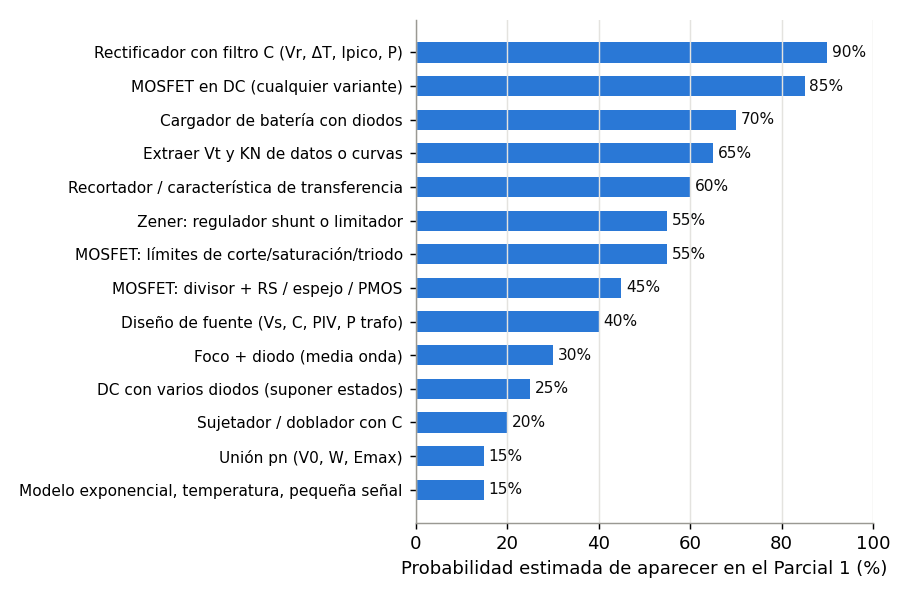
| Problema | Contenido probable | Peso |
|---|---|---|
| 1 | Circuito con diodos y forma de onda: recortador con triangular, transferencia, o cargador con fuente de corriente | 20–25 % |
| 2 | Rectificador con condensador: Vr con corrección por ΔT, Ipico, potencia o PF, opinión sobre el diodo; o un cargador de batería | 25–30 % |
| 3 | Zener: regulador shunt con dos diseños, o regulador a la salida de la fuente | 15–20 % |
| 4 | MOSFET CD4007: Vt y KN desde curva o mediciones, luego punto Q o límites de región | 25–30 % |
ALTA Estudia hasta poder hacerlo sin mirar. MEDIA Resuélvelo al menos una vez. BAJA Basta con leer el método.
Datos: vs = 169.7 sen(377t) V, directo de la red sin transformador. C = 1000 µF, Rload = 20 Ω, VD = 1 V (1N4004). Ls = Ld = 1 µH y Rs = R1 = 0.01 Ω. Se pide Vr, Ipico y P, repetir con la corrección por ΔT, y opinar sobre el 1N4004.
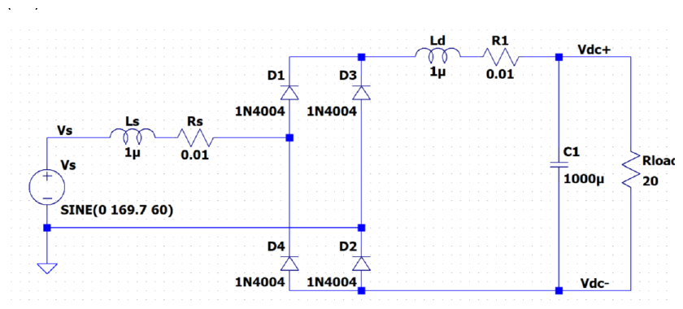
+--------------+-------------+--(Ld 1uH)--/\/\/--+--------+------o Vdc+
| | R1 0.01 | |
--- --- --- >
D1 / \ D3 / \ --- C1 < R_load
| | | 1000uF > 20 ohm
+--(Ls)--/\/\/---+ A | | |
| 1uH Rs | | | |
(~ Vs) 0.01 --- | | |
169.7 V D4 / \ | | |
pico, 60 Hz | | | |
+-------B--------)--------------+ B | |
GND | | | |
| --- | |
| D2 / \ | |
| | | |
+--------------+----------------------------------+--------+------o Vdc-Técnica: comparación de impedancias (XL = ωL) y aproximación de elementos despreciables.
¿Se redibuja? Sí. Ls, Ld → cortos; Rs, R1 → cortos (son mucho menores que 20 Ω).
Resultado: queda un puente ideal con VD = 1 V alimentando C ∥ Rload.
Técnica: método de estados + LVK. En el pico positivo (A > B) conducen D1 y D2; D3 y D4 están en inversa.
¿Se redibuja? Sí. D1, D2 (ON) → baterías de 1 V. D3, D4 (OFF) → abiertos.
A --(+ 1 V -)--+-------+-------+--(+ 1 V -)-- B
D1 | | | D2
--- > |
C --- < 20 | (D3 y D4 abiertos, no se dibujan)
| > |
+-------+-------+
Resultado: Vp = 167.7 V
Técnica: descarga del condensador a corriente ≈ constante durante T/2 (C·Vr = IL·T/2).
¿Se redibuja? Sí. Los cuatro diodos (OFF) → abiertos: C se descarga sola en Rload.
+-------+-------+
| | | v_o(t) ~ V_p - (V_p / RC) t
--- > |
C --- < 20 | i_L
| > |
+-------+-------+
Resultado: Vr = 69.9 V, el 42 % de Vp. Es enorme: la corrección por ΔT será obligatoria.
Técnica: Vpcos(ωΔT) = Vp − Vr con cos x ≈ 1 − x²/2.
¿Se redibuja? No.
Resultado: ΔT = 2.42 ms
Técnica: valor medio del rizado triangular + Ley de Ohm + pulso triangular de corriente (profesor) + balance de potencia.
¿Se redibuja? No.
Resultado: Vr = 69.9 V, Ipico = 45.7 A, P ≈ 881 W (+13 W en diodos).
Técnica: la descarga real dura T/2 − ΔT, no T/2 → C·Vr = IL(T/2 − ΔT).
¿Se redibuja? No (mismo circuito de descarga del paso 3).
^ v_o (V)
|
167.7 +- - - ******- - - - -*****- - - - - ***** - - - - -*****- - - - - ** V_p = 167.7 V
| * . *** * .**** * .**** * . **** *
| * . ***** . ***** . ***** . *****
123 +- -*- - - -.- - - . - - - . - - -.- - - -.- - - . - - - . - - -.- - mínimo real ~ 123 V
| * . . . . . . . .
| * . . . . . . . .
| * . . . . . . . .
| * . . . . . . . .
| * . . . . . . . .
| * . . .. .. ..
|* .. . . ..
0 +*--------------.----------------------------------------------------
90° 270° 450° 630° wt
Simulación ideal con V_p = 167.7 V y RC = 20 ms: el rizado real es ~45 V.
La fórmula tradicional (69.9 V) lo sobreestima; la corregida (49.6 V) se acerca mucho más.
Resultado: Vr = 49.6 V, Vdc = 142.9 V, Idc = 7.15 A, P ≈ 1021 W, Ipico ≈ 49 A. La simulación da Vr ≈ 44 V e Ipico ≈ 46 A: la versión corregida es mucho más realista.
Técnica: comparación con la hoja de datos (IF(AV) = 1 A, IFSM = 30 A no repetitiva, VRRM = 400 V).
¿Se redibuja? No.
Resultado: NO conviene. El PIV alcanza, pero la corriente promedio y los picos repetitivos lo destruirían. Hace falta un puente de potencia de al menos 10–25 A.
Técnica: los mismos pasos 3–6 + rms de pulsos triangulares + definición de PF.
¿Se redibuja? Sí. Diodos ON → cortos (VD = 0); Rload = 12 Ω.
Resultado (coincide con la solución oficial): Vr = 73.6 V, Vdc = 132.9 V, Idc = 11.07 A, P = 1472 W, Ipico = 59.0 A, PF = 0.587.
NMOS del CD4007 con la curva ID–VGS de la figura. RD = 1.1 kΩ, −1.5 V ≤ VIN ≤ 1.5 V. a) VG mínimo para no entrar en corte; b) VDD mínimo para saturación con VG = 5 V; c) ID con VIN = 0 y VDD = 20 V; d) lo mismo con VDD = 10 V.
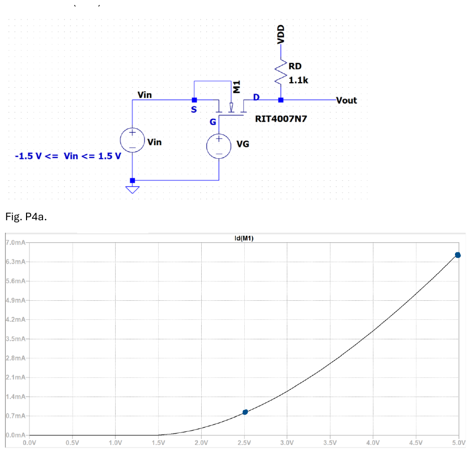
V_DD
|
>
< R_D = 1.1 k
>
|
+---------o V_out
| D
||--+
G +--------|| M1 (CD4007 NMOS, sustrato unido a S)
| ||->+
| | S
| +-------------+
| + | +
( V_G ) ( V_IN ) -1.5 V ... +1.5 V
| - | -
| |
GND ----------------------- GNDTécnica: dos puntos en saturación (cociente de corrientes, guía 03 sección 3).
¿Se redibuja? No. Se leen los puntos marcados: (2.5 V; 0.8 mA) y (5 V; 6.6 mA).
^ I_D (mA)
| : :
6.6 +- - - - - - - - - - - - - - - : - - - - - - - - - - - - -*** (5 V ; 6.6 mA)
| : ** :
| : ** :
| : *** :
| : *** :
| : *** :
| : **** :
| : **** :
| :***** :
0.8 +- - - - - - - - - - - - ******* - - - - - - - - - - - - - -: (2.5 V ; 0.8 mA)
0 +************************------:----------------------------:
1.16 2.5 5 V V_GS
Curva de la figura P4a reconstruida con V_t = 1.16 V y K_N = 0.90 mA/V^2: pasa por los dos puntos marcados.
Resultado: Vt = 1.16 V y KN = 0.90 mA/V² (la curva despega cerca de 1.2 V: coincide).
Técnica: condición de conducción VGS > Vt, evaluada en el peor caso (VIN máximo, porque VGS = VG − VIN).
¿Se redibuja? No.
Resultado: VG,min = 2.66 V
Técnica: condición de saturación con tensiones de nodo (VD ≥ VG − Vt) en el peor caso: la corriente máxima, que ocurre con VIN = −1.5 V.
¿Se redibuja? Sí. MOSFET (saturación) → fuente de corriente ID,max entre D y S. VIN = −1.5 V.
V_DD
|
> R_D = 1.1 k V_D = V_DD - I_D,max * R_D
|
+-----o V_D debe cumplir V_D >= V_G - V_t = 5 - 1.16 = 3.84 V
|
( v I_D,max ) fuente de corriente (MOSFET saturado)
|
+-----o S = -1.5 V
|
( V_IN = -1.5 V )
|
GND
Resultado: VDD,min = 17.9 V
Técnica: suposición de saturación + Ley de Ohm + verificación de región.
¿Se redibuja? Sí. MOSFET → fuente de corriente; la fuente S queda a tierra (VIN = 0).
Resultado: ID = 6.64 mA, saturación (la solución oficial da 6.61 mA por redondeo).
Técnica: suposición de saturación → contradicción → ecuación de triodo igualada a la Ley de Ohm (cuadrática en VDS).
¿Se redibuja? Sí. Primero MOSFET → fuente de corriente (falla). Después MOSFET → elemento de triodo, ID = KN[VOVVDS − ½VDS²].
10 V
|
> R_D = 1.1 k I_D = (10 - V_DS) / 1.1k
|
+-----o V_D = V_DS
|
[ M1 en TRIODO ] I_D = 0.90 [ 3.84 V_DS - 0.5 V_DS^2 ]
|
GND
Resultado: triodo, VDS = 3.03 V, ID = 6.34 mA (oficial: 6.32 mA).
Datos: 120 Vac con transformador 10:1, puente de 1N4001 con VD = 0.85 V, R1 = 10 Ω, batería de 4 celdas AAA de 1.5 V (6 V, 800 mAh). Halle Ipico, la corriente promedio en la batería y en cada diodo, el tiempo de carga y la potencia.
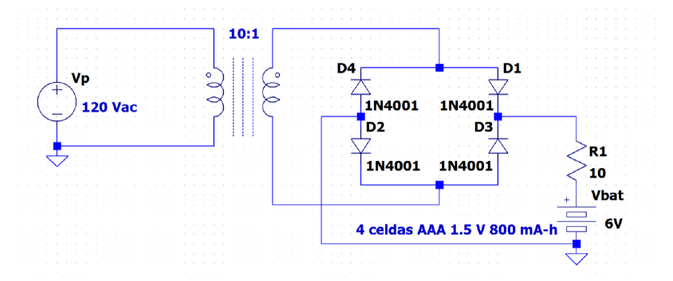
10:1
+----+ +----+
| )| |( |
(~ 120 )| |( | secundario: 12 Vrms = 16.97 V pico, terminales A y B
Vac )| |( |
| )| |( |
+----+ +----+
A B
+---------------+---------------+ riel +
| | |
--- --- >
D1 / \ D3 / \ < R1 = 10 ohm
| | >
+-----A------+ | | +
| | | ( 6 V ) batería: 4 celdas AAA, 800 mAh
(~ vs) --- | | -
16.97 V D4 / \ | |
pico | | |
+-----B------)---------------+ |
| | |
| --- |
| D2 / \ |
| | |
+---------------+---------------+ riel -
Igual que en la figura: semiciclo + -> conducen D1 y D2 ; semiciclo - -> conducen D3 y D4.Técnica: relación de transformación + conversión rms → pico.
¿Se redibuja? No.
Resultado: Vs = 16.97 V pico
Técnica: método de estados + LVK en la malla que conduce.
¿Se redibuja? Sí. Semiciclo +: D1 y D2 (ON) → baterías de 0.85 V; D3 y D4 (OFF) → abiertos. El semiciclo − es idéntico con D3 y D4.
A --(+0.85 V-)--/\/\/--(+ 6 V -)--(+0.85 V-)-- B
D1 R1 10 batería D2
i -->
LVK: vs - 0.85 - 10 i - 6 - 0.85 = 0 => i = (vs - 7.7) / 10 (solo si vs > 7.7 V)
Resultado: θ1 = 27.0° = 0.471 rad; conduce de 27° a 153° en cada semiciclo.
Técnica: LVK del paso 2 evaluada en θ = 90°.
¿Se redibuja? No (mismo equivalente).
Resultado: Ipico = 0.927 A
Técnica: valor promedio por integración sobre medio periodo (onda completa).
¿Se redibuja? No.
^ |vs| (V)
| : : : :
16.97 + : ********** : : ********** :
| : ** ** : : ** ** :
| : * ** : : ** * :
| :** * : : * **:
|- - -*- - - - - - - - - - **- - - - **- - - - - - - - - - * - - 2V_D + V_B = 7.7 V
| **: :* *: :**
| * : : * * : : *
| * : : * * : : *
0 +*----:---------------------:---**---:---------------------:----*
27° 153° 207° 333° wt
^ i_bat
0.927 A + : #### : : #### :
| : ### ### : : ### ### :
| : ## ### : : ### ## :
| : ## # : : # ## :
| :# ##: :## #:
0 +######---------------------##########---------------------######
wt
La batería solo recibe corriente mientras |vs| supera 2 V_D + V_B (entre las líneas punteadas).
Resultado: Ibat = 0.424 A y Idiodo = 0.212 A.
Técnica: definición de capacidad (A·h).
¿Se redibuja? No.
Resultado: t ≈ 1.89 h
Técnica: balance de potencia: batería (VBIprom) + diodos (2VDIprom) + resistencia (R·Irms²).
¿Se redibuja? No.
Resultado: P ≈ 6.38 W. La resistencia gasta más que la batería: la eficiencia es solo 40 %.
VS triangular de 5 V pico, R1 = RL = 5.1 kΩ, V1 = 1.5 V, V2 = 1 V (con el − arriba), diodos 1N914 con la caída observada en el laboratorio: VD ≈ 0.5 V. Dibuje Vout.
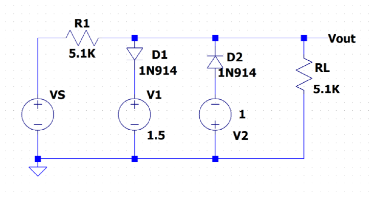
R1 = 5.1 k
+------/\/\/------+----------------+----------------+------o V_out
| | | |
| \ / D1 --- D2 >
(~ V_S) --- / \ < R_L = 5.1 k
triangular | | >
5 V pico | + | - |
( 1.5 V ) V1 ( 1 V ) V2 |
| - | + |
+-----------------+----------------+----------------+------ GND
D1: ánodo en V_out, cátodo en +1.5 V. D2: cátodo en V_out, ánodo en -1 V.Técnica: modelo OFF (abierto) + divisor de tensión.
¿Se redibuja? Sí. D1 y D2 (OFF) → abiertos: se borran sus ramas con V1 y V2.
V_S --/\/\/--+--/\/\/-- GND
5.1 k | 5.1 k
V_out = V_S * 5.1/(5.1 + 5.1)
Resultado: Vout = VS/2
Técnica: condición de conducción VA − VK ≥ VD + modelo de caída constante.
¿Se redibuja? Sí, para VS ≥ 4 V: D1 (ON) → batería de 0.5 V en serie con V1; D2 sigue abierto.
5.1 k
V_S --/\/\/--+-----------------+------o V_out = 2 V
i_R1 ->| + |
( 0.5 V ) D1 ON > R_L
| - |
( 1.5 V ) V1 |
| |
GND ---------+-----------------+
Resultado: para VS ≥ 4 V, Vout = +2 V (ID1,max = 0.196 mA).
Técnica: la misma condición para D2 (ánodo en −1 V, cátodo en Vout).
¿Se redibuja? Sí, para VS ≤ −3 V: D2 (ON) → batería de 0.5 V; D1 → abierto.
5.1 k
V_S --/\/\/--+-----------------+------o V_out = -1.5 V
<- i | + |
( 0.5 V ) D2 ON > R_L (la corriente sube por D2
| - (cátodo arriba)| desde la fuente de -1 V)
( -1 V ) V2 |
| |
GND ---------+-----------------+
Resultado: para VS ≤ −3 V, Vout = −1.5 V (ID2,max = 0.392 mA).
Técnica: unir los tramos (pendiente 1/2 entre −3 V y 4 V, planos afuera) y pasar la triangular por la transferencia.
¿Se redibuja? No: se dibujan las gráficas.
^ V_out
| : :
2 +- - - - - -:- - - - - - - - - - - - - - - - - -********* +2 V
| : ***** :
| : ****** :
| : ***** :
0 +-----------:-------------******-------------------:-----
| : ***** :
| : ****** :
-1.5 +**************- - - - - - - - - - - - - - - - - - : - - -1.5 V
| : :
| : :
-5 -3 4 5 V V_S
Pendiente 1/2 (divisor R1-RL) entre V_S = -3 V y V_S = 4 V; plana fuera de ese intervalo.
^ V
|
5 + .. ..
| .. . . ..
| . . .. .
2 +- - . -***- ..- - - - - - - - - - - . -**** -.- - - - - - - - - - +2 V (D1 ON)
| ..*** *** . . ** ** .
| .** **. *** ***.
0 +**-------------***--------------**--------------***-------------**
| .*** *** .** **.
-1.5 +- - - - - - - - - -.-******** . - - - - - - - - - -.-*********..- -1.5 V (D2 ON)
| . . .. .
| . .. . .
| .. . . ..
-5 + .. ..
|
T/4 T/2 3T/4 T t
. V_S triangular de 5 V pico * V_out: sigue V_S/2 y se recorta en +2 V y en -1.5 V
Recorte superior: mientras V_S > 4 V (10 % del periodo). Recorte inferior: mientras V_S < -3 V (20 %).
Resultado: Vout sigue a VS/2 y se recorta en +2 V y en −1.5 V. Con VD = 0.7 V los niveles serían +2.2 V y −1.7 V.
P4: con VDD = 10 V se mide V1 = 4.14 V con RD = 1.2 kΩ y V1 = 3.28 V con RD = 2.7 kΩ. Halle Vt y KN. P5: con VG = 5 V, RD = 2.7 kΩ, VDD = 10 V y la fuente en Vi (0 a 5 V), halle los rangos de cada región.
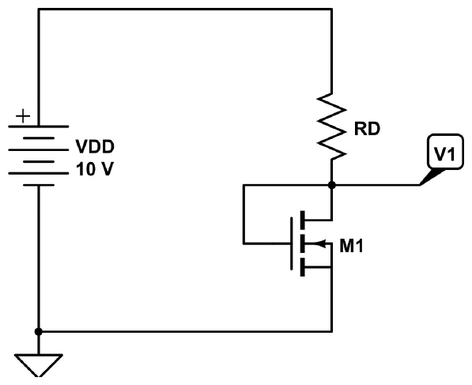
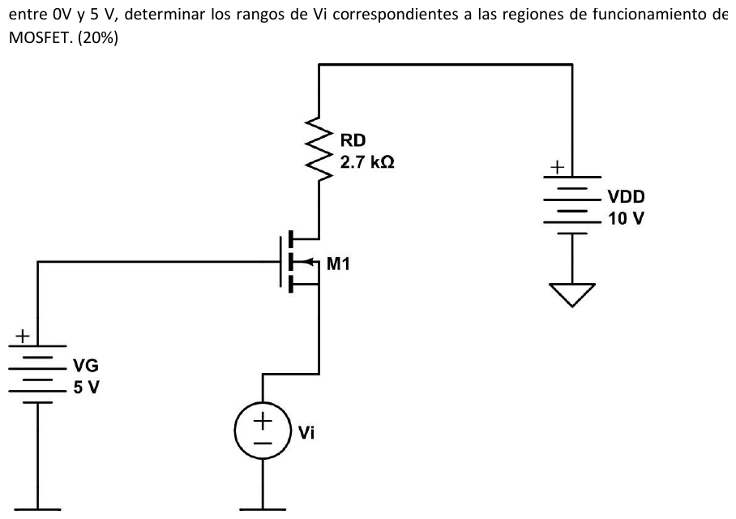
P4: V_DD = 10 V P5: V_DD = 10 V
| |
> >
< R_D < R_D = 2.7 k
> >
| |
+------+------o V_1 +-----o V_D
| | D |
| ||--+ ||--+
+--|| M1 (G unido a D) V_G = 5 V --||
||->+ ||->+
| S | S
GND ( V_i ) 0 ... 5 V
|
GNDTécnica: transistor conectado como diodo → VDS = VGS > VOV → siempre saturación.
¿Se redibuja? Sí. MOSFET → fuente de corriente ½KN(V1 − Vt)², con VGS = V1.
Resultado: VGS = V1 en cada medición y se puede usar la fórmula de dos puntos.
Técnica: Ley de Ohm en RD.
¿Se redibuja? No.
Resultado: (4.14 V; 4.883 mA) y (3.28 V; 2.489 mA)
Técnica: dos puntos en saturación.
¿Se redibuja? No.
Resultado: Vt = 1.14 V y KN = 1.08 mA/V²
Técnica: condición de corte VGS ≤ Vt con VGS = VG − Vi.
¿Se redibuja? Sí, para Vi grande: MOSFET → abierto (ID = 0, VD = 10 V).
Resultado: corte para Vi > 3.86 V
Técnica: borde de saturación con tensiones de nodo: VD = VG − Vt, luego Ley de Ohm y ecuación de saturación.
¿Se redibuja? Sí. MOSFET (en el borde, todavía saturado) → fuente de corriente.
10 V
|
> 2.7 k I_D = (10 - 3.86) / 2.7 k
|
+-----o V_D = V_G - V_t = 5 - 1.14 = 3.86 V
|
( v I_D ) V_GS = V_t + raíz(2 I_D / K_N)
|
+-----o V_i = V_G - V_GS
|
( V_i )
|
GND
Resultado: frontera en Vi = 1.81 V
Técnica: prueba con un punto (Vi = 0) suponiendo saturación.
¿Se redibuja? Sí. MOSFET → fuente de corriente (prueba) → falla → triodo.
^ I_D (mA)
| : :
3.33 +******** : :
| ******** : :
| *****: :
2.27 +- - - - - - - - - - -** - - - - - - - - - - - : - - - - - - frontera triodo/sat
| : *** :
| : ** :
| : *** :
| : *** :
| : ***** :
0 +---------------------:-----------------*********************
0 1.81 3.86 5 V V_i
|<----- TRIODO ----->|<------ SATURACIÓN ------>|<- CORTE ->|
En triodo I_D casi no cambia: el transistor es casi un corto y R_D limita la corriente.
Resultado: triodo para 0 < Vi < 1.81 V, saturación para 1.81 < Vi < 3.86 V, corte para Vi > 3.86 V.
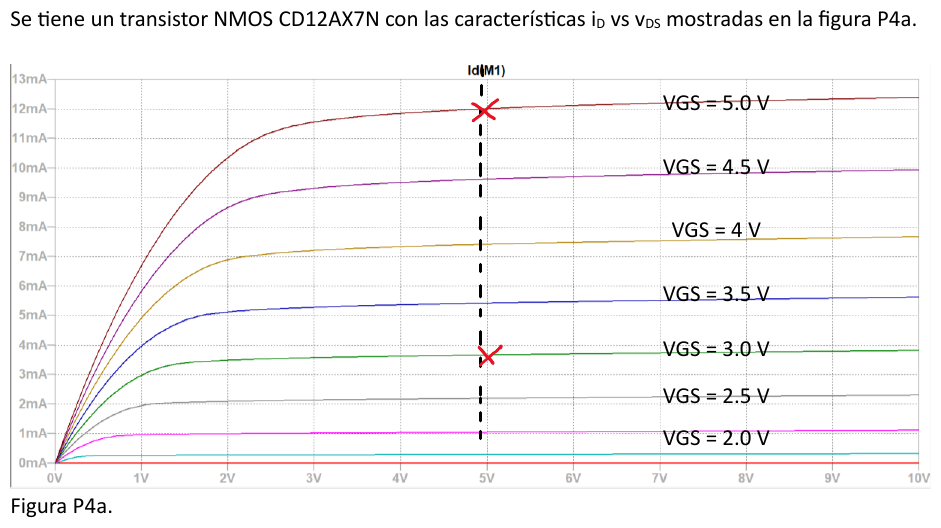
Técnica: lectura en la zona plana (saturación) a un mismo VDS = 5 V (línea punteada de la figura).
¿Se redibuja? No.
Resultado: (5 V; 12.0 mA) y (3 V; 3.65 mA)
Técnica: dos puntos en saturación.
¿Se redibuja? No.
Resultado: Vt ≈ 0.54 V y KN ≈ 1.21 mA/V². Es sensible a la lectura: con 3.6–3.7 mA, Vt queda entre 0.50 y 0.58 V.
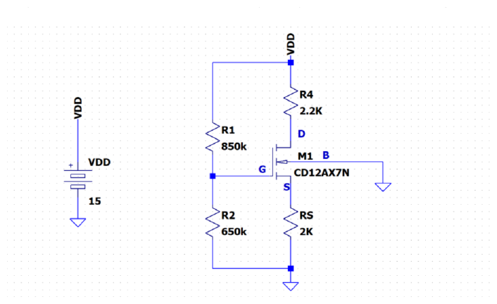
V_DD = 15 V
|
+------+------+
| |
> >
< R1 850k < R4 = R_D = 2.2 k
> >
| |
| +------o D
| |
| ||--+
+---------|| M1
| G ||->+ (sustrato B a GND)
| |
> +------o S
< R2 650k >
> < R_S = 2 k
| >
| |
GND GNDTécnica: divisor de tensión (IG = 0).
¿Se redibuja? Sí. Compuerta → abierta: R1 y R2 en serie.
Resultado: VG = 6.5 V
Técnica: LVK G–S–RS + ecuación de saturación → cuadrática.
¿Se redibuja? Sí. MOSFET → fuente de corriente ½KN(VGS − Vt)².
V_G = 6.5 V o---( V_GS )---+ S
|
> R_S = 2 k (lleva I_D)
|
GND 6.5 = V_GS + I_D (2 k)
Resultado: VGS = 2.39 V, ID = 2.06 mA
Técnica: LVK en la malla de salida + condición de saturación.
¿Se redibuja? No.
Resultado: VDS = 6.36 V, saturación.
Especificación: VL = 12 V, rizado de 1 %, IL = 2 A, VD = 1 V, 60 Hz. Halle la tensión del transformador, C, el PIV, la corriente pico repetitiva y la potencia del transformador.
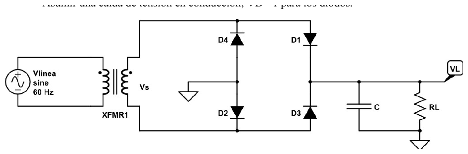
(~ V_linea) ==XFMR== V_s --> [ puente D1..D4 ] --+----------+------o V_L = 12 V
| |
--- >
--- C < R_L (I_L = 2 A)
| >
GND ----+----------+Técnica: especificación porcentual.
¿Se redibuja? No.
Resultado: Vr = 0.12 V
Técnica: LVK en el pico con un par de diodos ON.
¿Se redibuja? Sí. Par ON → dos baterías de 1 V; par OFF → abierto.
A --(+1V-)-- V_L = 12 V --(+1V-)-- B V_s,pico = 12 + 2(1) = 14 V
Resultado: transformador de 9.9 Vrms (14 V pico).
Técnica: descarga a corriente constante: C·Vr = IL·T/2.
¿Se redibuja? Sí. Diodos OFF → C descargándose en RL.
Resultado: C = 138 889 µF (≈ 0.139 F)
Técnica: LVK con un par OFF + fórmula de Sedra sin el "+1" (así la usa el profesor).
¿Se redibuja? No.
Resultado: PIV = 13 V, Ipico = 88.9 A (con el "+1": 90.9 A).
Técnica: estimación del profesor, P ≈ Vs,pico·IL.
¿Se redibuja? No.
Resultado: Ptrafo ≈ 14 × 2 = 28 W
Datos: puente con VD = 1.25 V, C = 5000 µF, R = 10 Ω, batería de 12 V y 50 Ah. El tiempo de carga debe ser de unas 24 h. ¿Transformador de 12 V o de 24 V?
(~ V_s) --> [ puente ] --+-----------+--/\/\/--+
| | R 10 | +
--- | ( 12 V ) batería 50 Ah
--- 5000 uF | | -
| | |
riel - --+-----------+---------+
Técnica: fuente filtrada con carga R + batería: Idc = (VC − VB)/R, rizado Vr = Idc/(2fC), corrección Vdc = VC − Vr/2.
¿Se redibuja? Sí. Par ON → 2 × 1.25 V; el condensador se ve como una fuente de VC que alimenta R + batería.
( V_C ) --/\/\/--(+ 12 V -)--+ I_dc = (V_C - 12) / 10
| R 10 |
+---------------------------+
Resultado: con 12 V tarda ≈ 220 h: no sirve.
Técnica: la misma que el paso 1.
¿Se redibuja? No (mismo equivalente).
Resultado: se elige 24 V: Idc = 1.78 A y unas 28 h.
Técnica: reparto en el puente (cada par conduce medio ciclo) + pulso triangular (profesor).
¿Se redibuja? No.
Resultado: 0.89 A promedio por diodo e Ipico ≈ 26.8 A (usando Vp = 31.44 V saldría 24.7 A; di cuál usas).
Técnica: balance de potencia; η = potencia útil (batería)/potencia de entrada.
¿Se redibuja? No.
Resultado: P = 57.6 W y η = 21.4/57.6 = 37 %. El resto se pierde en R y en los diodos.
I = 60 mA, vi senoidal de 12 V pico, VD = 0.7 V, batería de 6 V. Halle la forma de iB, su pico y su promedio; repita si el pico baja 10 %.
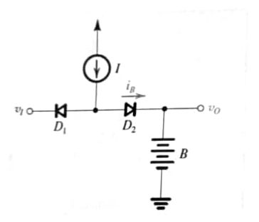
(^ I = 60 mA) empuja corriente hacia el nodo X
|
v_i o-------|<---------X--------->|--------+------o v_O
D1 D2 | i_B -->
(cátodo en v_i) | +
( 6 V ) batería B
| -
GNDTécnica: método de estados + LCK en X (la corriente de la fuente debe salir por algún diodo).
¿Se redibuja? Sí. D1 (ON) → batería de 0.7 V; D2 (OFF) → abierto.
(^ 60 mA)
|
v_i o--(-0.7 V+)-X o o-----+ 6 V V_X = v_i + 0.7
D1 ON D2 abierto | D2: V_X - 6 = v_i - 5.3 < 0.7 si v_i < 6 V ✓
Resultado: iB = 0 mientras vi < 6 V (toda la corriente vuelve por D1 hacia la fuente vi).
Técnica: método de estados + LCK en X.
¿Se redibuja? Sí. D2 (ON) → batería de 0.7 V; D1 (OFF) → abierto.
(^ 60 mA)
|
v_i o----o o---X--(+0.7 V-)--+ 6 V V_X = 6.7 V
D1 abierto D2 ON | i_B = 60 mA D1: 6.7 - v_i < 0.7 si v_i > 6 V ✓
Resultado: iB = I = 60 mA mientras vi > 6 V. Como los dos diodos tienen la misma caída, el umbral es exactamente vi = VB.
Técnica: ángulos de cruce con arcsen + promedio de un pulso rectangular.
¿Se redibuja? No.
^ v_i (V)
12 + : *** : : ** :
| : ** ** : : *** *** :
| ** **: :* *:
6 +- *:- - - - - * - - - - - - - - - -*- - - - - **- - - - - - - - - V_B = 6 V
| * : :* *: : *
0 +*--:----------:-*---------------**-:----------:--*---------------*
| : : * * : : * *
| : : ** * : : * *
| : : * * : : ** **
| : : *** *** : : ** **
-12 + : : ** : : ***
30° 150° 390° 510° wt
^ i_B
| : : : :
60 mA + ###########: :###########
| # #: :# #
| #: # # :#
0 +###:----------######################----------:###################
wt
i_B es un pulso RECTANGULAR de 60 mA (lo fija la fuente) durante 1/3 del ciclo: promedio 20 mA.
Resultado: iB,pico = 60 mA e iB,prom = 20 mA.
Técnica: la misma que el paso 3.
¿Se redibuja? No.
Resultado: pico 60 mA (lo fija la fuente) y promedio 18.75 mA.
Zener 1N5235: VZ = 6.8 V, rz = 5 Ω a 20 mA y rz = 750 Ω a 0.25 mA. Alimentación 10 ± 1 V, sin carga. Diseño 1: IZ = 20 mA. Diseño 2: IZ = 0.25 mA. Halle R y la regulación de línea de cada uno.
R
V_S o----/\/\/----+------o V_O Modelo en ruptura: |
10 +/- 1 V I_Z | > r_z
-z- 1N5235 | +
/ \ ( V_Z0 )
| | -
GND o-------------+
Técnica: modelo lineal por tramos del Zener.
¿Se redibuja? No.
Resultado: VZ0 = 6.7 V
Técnica: LVK en la malla única (sin carga) + Ley de Ohm en R.
¿Se redibuja? Sí. DZ → 6.7 V + 5 Ω (en 20 mA, VZ = 6.8 V).
10 V o---/\/\/---+---o V_O = 6.8 V
R > 5 ohm
20 mA | +
( 6.7 V )
| -
GND o------------+
Resultado: R = 160 Ω, regulación 30.3 mV/V → la salida varía ±30 mV.
Técnica: la misma, con la rz de ese punto de operación (750 Ω).
¿Se redibuja? Sí. DZ → ≈ 6.7 V con rz = 750 Ω.
Resultado: R = 13.2 kΩ, regulación 53.8 mV/V → ±54 mV.
Técnica: criterio de ingeniería: consumo contra regulación.
¿Se redibuja? No.
Resultado: el diseño de baja corriente consume 80 veces menos pero regula casi el doble de mal, porque en el codo rz es mucho mayor.
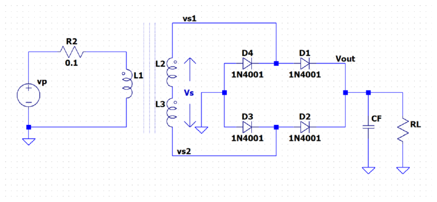
(~ vp) --R2 0.1-- L1 ==== L2/L3 ---> vs1, vs2 ---> [ D1..D4, 1N4001 ] --+-------+------o V_out
| |
--- >
--- CF < RL
| >
GND ----+-------+
Lo único que necesita el análisis es el pico que llega al condensador: V_p = 17.07 V
(transformador del laboratorio 1 menos dos caídas de diodo, según la tabla oficial).Técnica: fórmulas de rizado de onda completa aplicadas a cada combinación.
¿Se redibuja? Sí, conceptualmente: en cada caso, diodos OFF → C descargándose en RL.
| RL | C | Vdc | Vr | P |
|---|---|---|---|---|
| 100 Ω | 470 µF | 15.55 V | 3.03 V | 2.42 W |
| 100 Ω | 1000 µF | 16.36 V | 1.42 V | 2.68 W |
| 1000 Ω | 470 µF | 16.92 V | 0.30 V | 0.29 W |
| 1000 Ω | 1000 µF | 17.00 V | 0.14 V | 0.29 W |
Resultado: tabla oficial reproducida. Más C o más R → menos rizado.
Técnica: conservación de carga: durante el hueco no hay recarga, C·ΔV = IL·Δt.
¿Se redibuja? Sí. Red ausente → todos los diodos abiertos: C sola alimenta RL = 100 Ω durante 100 ms.
+-------+-------+
| | | I_L = 16.36 V / 100 ohm = 0.164 A
--- > | caída permitida: el mismo V_r = 1.42 V
CF --- < 100 |
| > | C = I_L * Δt / V_r
+-------+-------+
Resultado: C ≈ 12 000 µF (valor comercial).
Técnica: rizado, ΔT y pulso triangular con el nuevo C.
¿Se redibuja? No.
Resultado: Ipico ≈ 9.1–9.5 A (oficial: 9.48 A). Más C → ΔT más corto → pico mucho mayor: el 1N4001 (30 A no repetitivos) queda al límite.
Diodos: VD0 = 0.65 V, rD = 30 Ω. Zener D5: 6.8 V a 37 mA, rz = 3.5 Ω. R1 = 1 kΩ. Trace vo contra vi para |vi| ≤ 10 V.
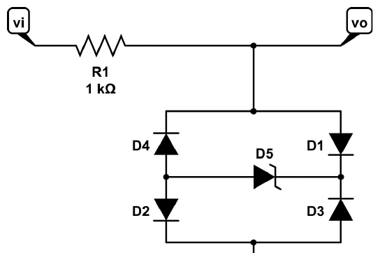
R1 = 1 k
v_i o-----/\/\/-----+-----------o v_o
|
+----------+----------+
| |
--- \ /
D4 / \ --- D1
| |
+------->|Z-----------+ D5 (Zener): ánodo a la izquierda,
| D5 | cátodo a la derecha
\ / ---
D2 --- D3 / \
| |
+----------+----------+
|
GNDTécnica: modelo lineal por tramos, VZ0 = VZT − IZTrz.
¿Se redibuja? No.
Resultado: VZ0 = 6.67 V
Técnica: método de estados: cualquier camino del nodo vo a tierra atraviesa dos diodos y el Zener, así que no conduce mientras |vo| < 2VD0 + VZ0.
¿Se redibuja? Sí. Todo el puente → abierto.
v_i o---/\/\/---+---o v_o = v_i (sin corriente en R1)
o
puente abierto
Resultado: vo = vi para |vi| < 7.97 V
Técnica: modelo lineal por tramos de los tres elementos en serie + divisor de tensión (o superposición).
¿Se redibuja? Sí. D1 → 0.65 V + 30 Ω; D5 (en ruptura) → 6.67 V + 3.5 Ω; D2 → 0.65 V + 30 Ω. D3 y D4 (OFF) → abiertos.
v_i o---/\/\/---+---o v_o
R1 1k |
> 30 + 3.5 + 30 = 63.5 ohm (r_D1 + r_z + r_D2)
| +
( 7.97 V ) (0.65 + 6.67 + 0.65)
| -
GND
Resultado: pendiente 1/16.75, vo(10 V) = 8.09 V
Técnica: el mismo análisis por simetría.
¿Se redibuja? Sí. D3, D4 → 0.65 V + 30 Ω; D5 → 6.67 V + 3.5 Ω en el mismo sentido que antes (la corriente entra por su cátodo, a la derecha); D1 y D2 → abiertos.
Resultado: vo = −7.97 + (vi + 7.97)/16.75; vo(−10 V) = −8.09 V. La transferencia es simétrica.
^ v_o
| : :
7.97 +- - - - - : - - - - - - - - - - - - - - - - - - ************ +7.97 V
| : **** :
| : **** :
| : **** :
| : **** :
0 +----------:-----------------****-----------------:----------
| : **** :
| : **** :
| : **** :
| : **** :
-7.97 +************- - - - - - - - - - - - - - - - - - -:- - - - - -7.97 V
| : :
-7.97 0 7.97 12 V v_i
Región I (|v_i| < 7.97 V): pendiente 1. Regiones II y III: pendiente 1/16.75 (casi plana).
2023R P4b: CD4007 (KP = 0.7 mA/V², KN = 1.1 mA/V², |Vt| = 1.4 V), VDD = 15 V, RB = 12 kΩ, RG = 1000 kΩ. Halle ID1 y VGS1 = VDS1.
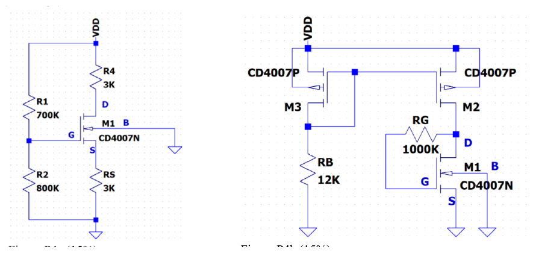
V_DD = 15 V
+--------------------+--------------------+
| S | S
||<-+ ||<-+
+---|| M3 (PMOS) +--------|| M2 (PMOS)
| ||--+ | ||--+
| | D | | D
+-------+----------------------------+ |
| (G3 = D3 = G2) +-------+
> | |
< R_B = 12 k > | D1
> < R_G |
| > 1 M |
GND | ||--+
+---|| M1 (NMOS)
G1 ||->+
| S
GNDTécnica: transistor con G unido a D → saturación; LVK en VDD → M3 → RB → tierra.
¿Se redibuja? Sí. M3 → elemento de dos terminales con I = ½KP(VSG3 − 1.4)².
15 V ---[ M3 diodo: V_SG3 ]---+---/\/\/--- GND (15 - V_SG3)/12k = (1/2)(0.7m)(V_SG3 - 1.4)^2
| R_B 12k
G2 = D3
Resultado: VSG3 = 3.08 V, ID3 = 0.993 mA
Técnica: espejo de corriente (mismo VSG, transistores iguales), válido si M2 satura.
¿Se redibuja? Sí. M2 → fuente de corriente de 0.993 mA que entra al nodo D1.
Resultado: ID2 = ID1 = 0.993 mA (se verifica en el paso 4).
Técnica: IG = 0 → RG no cae tensión → VG1 = VD1 → conectado como diodo → saturación.
¿Se redibuja? Sí. RG → cable (sin corriente); M1 → "diodo MOSFET".
Resultado: VGS1 = VDS1 = 2.74 V
Técnica: condición PMOS VSD ≥ VSG − |Vt|.
¿Se redibuja? No.
Resultado: el espejo funciona; las respuestas coinciden con la solución oficial.
2023 P4c: V1 = V2 = 10 V (±10 V respecto de tierra), RD1 = 1.3 kΩ, transistores del problema 6 (Vt = 0.54 V, KN = 1.21 mA/V²). Halle VOUT.
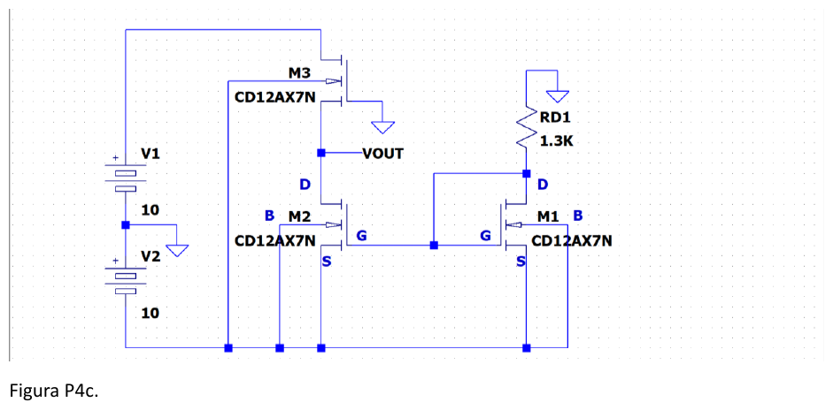
+10 V (V1) GND
| D |
||--+ >
-10 V -----------|| M3 < R_D1 = 1.3 k
(compuerta) ||->+ >
| S |
+------o V_OUT +-----------+ D1
| D | |
||--+ | ||--+
+-----|| M2 +-------|| M1
| ||->+ | ||->+
| | S | | S
| -10 V (V2) | -10 V
| |
+------------------------------------+ (G1 = D1 = G2)Técnica: condición de corte: su compuerta está en −10 V, el potencial más bajo del circuito, así que VGS3 ≤ 0 < Vt sea cual sea su fuente.
¿Se redibuja? Sí. M3 → circuito abierto: el drenaje de M2 queda sin camino de corriente.
Resultado: ID3 = 0 → ID2 = 0
Técnica: LVK GND → RD1 → M1 → −10 V + saturación.
¿Se redibuja? Sí. M1 → diodo MOSFET en serie con 1.3 kΩ entre 0 V y −10 V.
Resultado: ID1 = 5.05 mA, VGS1 = 3.43 V
Técnica: un espejo solo copia si el transistor de salida puede conducir; con ID = 0 y VGS > Vt, la única solución es triodo con VDS = 0.
¿Se redibuja? Sí. M2 → resistencia de triodo sin corriente (no cae tensión).
Resultado: VOUT = VS2 = −10 V. Aunque M2 "espeja" a M1, no copia los 5.05 mA.
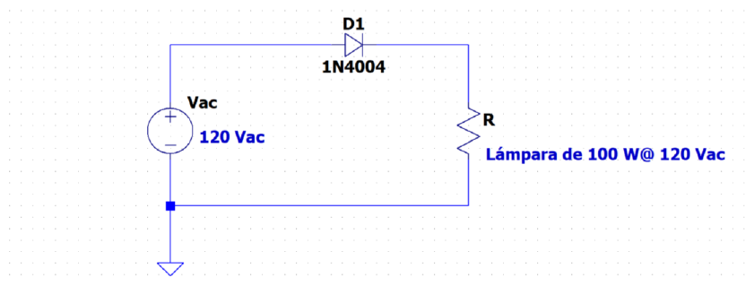
D1 (1N4004) +------------->|------------+ | | (~ 120 Vac) > | < R = lámpara de 100 W @ 120 Vac | > | | +---------------------------+ GND
Técnica: potencia nominal P = Vrms²/R.
¿Se redibuja? Sí. Lámpara → resistencia R fija (aproximación).
Resultado: R = 144 Ω
Técnica: rectificador de media onda: semiciclo + → D corto; semiciclo − → D abierto.
¿Se redibuja? Sí, en dos estados (ON: la lámpara ve vs; OFF: no hay corriente).
Resultado: P = 50 W, la mitad de la nominal.
Técnica: criterio de ingeniería.
¿Se redibuja? No.
Resultado: no ahorra "gratis": la lámpara recibe la mitad de la energía y da mucha menos luz (la eficacia luminosa cae más que la potencia porque el filamento está más frío), parpadea a 60 Hz, inyecta componente DC a la red, y R no es constante (el filamento frío tiene menos resistencia), así que el cálculo es aproximado.
VD = 0.6 V, R1 = 500 Ω, rama de D1 con V3 = 1.5 V y R2 = 750 Ω, rama de D2 con R3 = 250 Ω. Trace Vo contra Vi para −10 ≤ Vi ≤ 10 V.
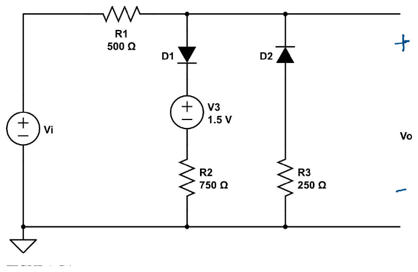
R1 = 500 +-------/\/\/-------+-----------------+------o + V_o | | | | \ / D1 --- D2 (D2: cátodo arriba en V_o) (~ V_i) --- / \ | | + | | ( 1.5 V ) V3 | | | - | | > > | < R2 = 750 < R3 = 250 | > > | | | +-------------------+------------------+------o - (GND)
Técnica: modelo OFF + Ley de Ohm (sin corriente en R1).
¿Se redibuja? Sí. D1 y D2 → abiertos.
Resultado: Vo = Vi para −0.6 V < Vi < 2.1 V
Técnica: caída constante + LCK en el nodo de salida (o divisor con superposición).
¿Se redibuja? Sí. D1 → batería de 0.6 V (queda en serie con 1.5 V y 750 Ω: total 2.1 V + 750 Ω); D2 → abierto.
V_i --/\/\/--+--o V_o
500 |
> 750
| +
( 2.1 V )
| -
GND
Resultado: Vo = 0.6Vi + 0.84; en 10 V, 6.84 V.
Técnica: caída constante + LCK.
¿Se redibuja? Sí. D2 → batería de 0.6 V (cátodo arriba) en serie con 250 Ω; D1 → abierto.
V_i --/\/\/--+--o V_o
500 | -
( 0.6 V ) (el + abajo: la corriente sube desde GND)
| +
> 250
GND
Resultado: Vo = Vi/3 − 0.4; en −10 V, −3.73 V.
^ V_o
| : :
6.84 + : : *****
| : : *****
| : : ****
| : : *****
2.1 + : *****
| : ***:
| : *** :
0 +-------------------------*****------:-----------------------
| ********* : :
| ********* : :
-3.73 +******* : :
| : :
-10 -0.6 2.1 10 V V_i
Pendientes: 1/3 (D2 ON) | 1 (ambos OFF) | 0.6 (D1 ON). Quiebres en V_i = -0.6 V y 2.1 V.
Transformador 12:1 (10 Vrms en el secundario), puente con VD = 0.7 V, R = 1 kΩ. Halle C, Vo, la fracción de conducción e iD promedio y pico para rizado de 4.5 % y 1.25 %.
Técnica: LVK con un par ON.
¿Se redibuja? Sí. Par ON → 2 × 0.7 V.
Resultado: Vp = 12.74 V
Técnica: C = Vp/(2fRVr), Vo = Vp − Vr/2, ωΔT = √(2Vr/Vp), fórmulas de Sedra.
¿Se redibuja? Sí, para el rizado: diodos OFF → C descargándose en R.
| Vr = 4.5 % | Vr = 1.25 % | |
|---|---|---|
| C | 185 µF | 667 µF |
| Vo promedio | 12.45 V | 12.66 V |
| Fracción de conducción ωΔT/2π | 4.77 % | 2.52 % |
| iD,prom (durante la conducción) | 143 mA | 264 mA |
| iD,pico | 273 mA | 516 mA |
Resultado: bajar el rizado de 4.5 % a 1.25 % exige 3.6 veces más C y casi duplica el pico de corriente.
vi de 10 Vrms (14.14 V pico) a 60 Hz, D1 con VD = 0.6 V, Zener D2 de 5.1 V. Halle vo(t) y su promedio.
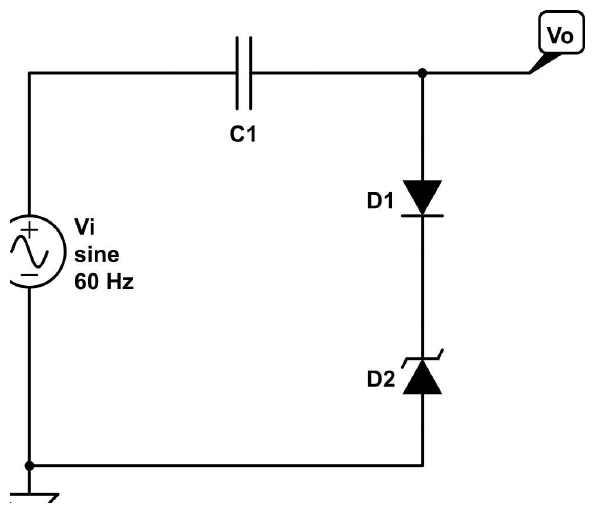
C1 +---------||---------+--------o V_o | + v_C - | (~ v_i) \ / D1 (ánodo arriba en V_o) 10 Vrms --- | | | -z- D2 (Zener: cátodo arriba, en ruptura cuando conduce hacia abajo) | / \ | | +--------------------+-------- GND
Técnica: método de estados: hacia abajo, D1 en directa (0.6 V) + Zener en ruptura (5.1 V); hacia arriba, D1 bloquea.
¿Se redibuja? Sí. Rama ON → batería de 0.6 + 5.1 = 5.7 V; rama OFF → abierta.
rama ON: V_o ---(+ 0.6 V -)---(+ 5.1 V -)--- GND => V_o = 5.7 V
D1 D2 ruptura
rama OFF: V_o ---o o--- GND (para V_o < 5.7 V; hacia abajo nunca conduce: D1 bloquea)
Resultado: la rama solo conduce cuando Vo intenta pasar de +5.7 V.
Técnica: LVK en la malla vi – C1 – rama ON.
¿Se redibuja? Sí. Rama → batería de 5.7 V.
Resultado: vC = 8.44 V (+ a la izquierda)
Técnica: rama OFF + condensador sin descarga = batería en serie.
¿Se redibuja? Sí. Rama → abierta; C1 → batería de 8.44 V.
(~ v_i) --(+ 8.44 V -)-- V_o V_o = v_i - 8.44
^ V
|
14.1 + ...... ......
| .. . . ..
| . . .. .
5.7 +- **********- ..- - - - - - - - - . - ******- -.- - - - - - - - - +5.7 V
| * * . . ** ** .
0 +*------------**--.--------------.--*----------*--.---------------.
| * . . * * . ..
| * . . * * . .
-8.44 +- - - - - - - - -*- . - - - ..- * - - - - - - - -*- ..- - - -.- -* promedio -8.44 V
| * ... .. * * ... ... **
| * .. * ** . *
| ** ** * *
| ****** *** ***
-22.6 + *
90° 270° 450° 630° wt
. v_i * v_o. En el primer pico la rama D1+Zener carga C a 8.44 V; después v_o = v_i - 8.44 V.
Resultado: Vo = vi − 8.44 V, entre +5.7 V y −22.6 V; Vo,prom = −8.44 V.
VCC = 20 V, VEE1 = VEE2 = 10 V (negativas respecto de tierra), R1 = R2 = R3 = 10 kΩ, 1N4148 con VD = 0.7 V. Halle las corrientes de los diodos y V1, V2, V3.
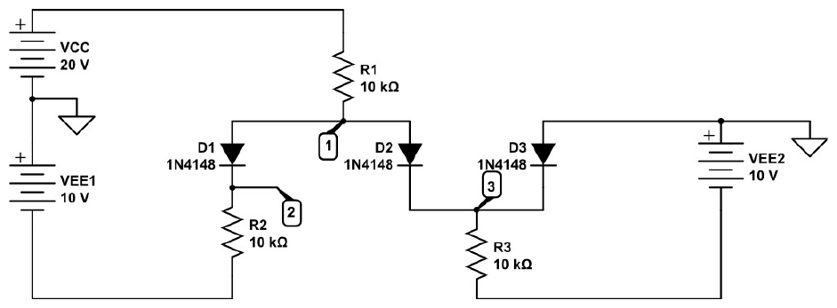
+20 V (VCC)
|
>
< R1 = 10 k
>
|
1 (V1)
+----------------------+
| |
\ / D1 \ / D2
--- ---
| |
2 (V2) 3 (V3)-----------+
| | |
> > ---
< R2 = 10 k < R3 = 10 k / \ D3 (ánodo en GND, cátodo en el nodo 3)
> > |
| | GND
-10 V (VEE1) -10 V (VEE2)Técnica: modelo de caída constante + LCK.
¿Se redibuja? Sí. D1, D2, D3 → baterías de 0.7 V.
Resultado: ID3 < 0 → contradicción: D3 está OFF.
Técnica: caída constante + LCK en el nodo 1.
¿Se redibuja? Sí. D1, D2 → baterías de 0.7 V; D3 → abierto.
+20 V --/\/\/--+ V1
10k |
+-------+-------+
| |
(+0.7-) D1 (+0.7-) D2
| |
V2 V3 D3 abierto: o o
| |
> 10k > 10k
| |
-10 V -10 V
Las dos ramas son iguales: I_D1 = I_D2 = (V1 - 0.7 + 10)/10k
Resultado: V1 = 0.467 V, V2 = V3 = −0.233 V, ID1 = ID2 = 0.976 mA
Técnica: condiciones de consistencia.
¿Se redibuja? No.
Resultado: solución confirmada (coincide con la oficial).
2017 P4 está resuelto paso a paso en la guía 01, ejemplo 1.2: V0 = 0.728 V, W = 0.32 µm, Emax = 45.2 kV/cm (con 10¹⁸/10¹⁷: 0.843 V, 0.110 µm, 154 kV/cm).
Técnica: equilibrio difusión = deriva en la unión.
¿Se redibuja? No hay circuito; se usa el dibujo de la unión.
p | n
difusión de huecos | ------>
difusión de electrones| <------
deriva de electrones | ------>
deriva de huecos | <------
campo E: <====== (de n hacia p)
Resultado: en directa la difusión aumenta, la deriva se mantiene y el total aumenta; en inversa la difusión disminuye, la deriva se mantiene y el total queda en −IS.
Corto de unión pn (resultados verificados): minoritarios 1.445×10⁴ cm⁻³; Jdif = 750 A/cm², compensada por un campo de unos 248 V/cm usando la n promedio; τ = L²/D = 14.8 µs; con 10¹⁶/10¹⁸: np = 2.25×10⁴ cm⁻³, pn = 225 cm⁻³, Vbi ≈ 0.81 V y W ≈ 0.33 µm. Las fórmulas están en la guía 01, secciones 1.2 a 1.4.